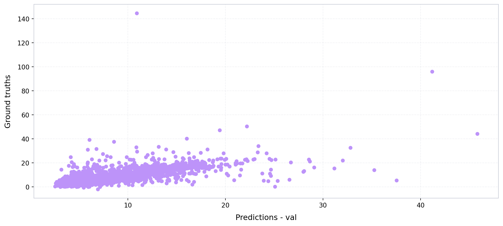
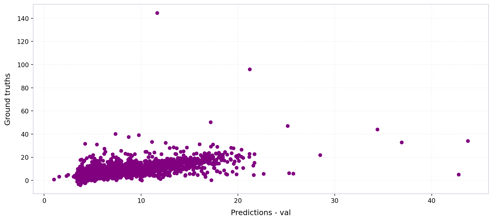
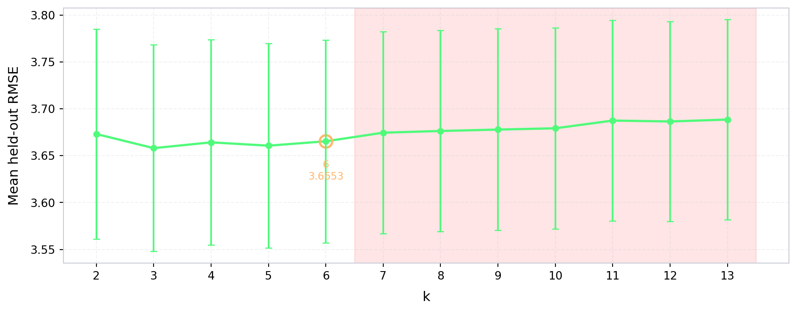
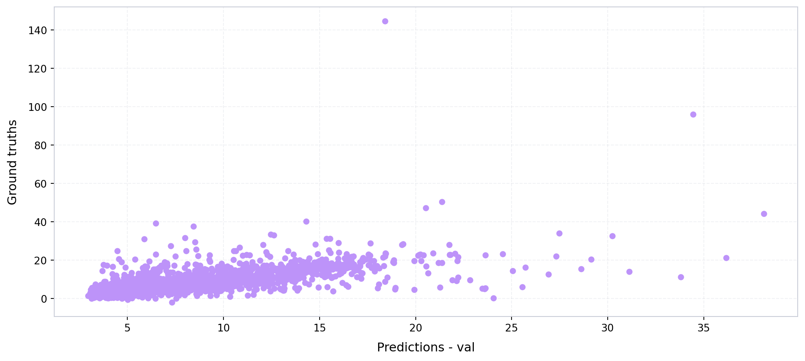

import numpy as np
def compute_mse(ground_truths, predicted_values):
mse = 0
n_data = len(ground_truths)
for i in range(n_data):
y_truth = ground_truths[i]
y_predicted = predicted_values[i]
mse += ((y_truth - y_predicted)**2)/n_data
return mse
def compute_rmse(ground_truths, predicted_values):
mse = compute_mse(ground_truths, predicted_values)
return np.sqrt(mse)
def compute_mae(ground_truths, predicted_values):
mae = 0
n_data = len(ground_truths)
for i in range(n_data):
y_truth = ground_truths[i]
y_predicted = predicted_values[i]
mae += np.abs(y_truth - y_predicted)/n_data
return mae
from sklearn.metrics import r2_score
def obtain_model_metrics(preds, ground_truths):
mse = compute_mse(preds, ground_truths)
rmse = compute_rmse(preds, ground_truths)
mae = compute_mae(preds, ground_truths)
r2_val = r2_score(ground_truths, preds)
return {
"mse":mse,
"rmse":rmse,
"mae":mae,
"r2_val":r2_val
}Training the models
Define metrics calculation functions
Opening the ground truth data
from pathlib import Path
import geopandas as gpd
PARENT_PATH = Path("/Users/legariapena.j/Library/CloudStorage/GoogleDrive-legariapena.j@husky.neu.edu/Shared drives/Cool and Carbon Free Africa/Building Image Datasets/data")
#Ground truth boston
GROUND_TRUTH_BOSTON_PATH = PARENT_PATH/"boston"/"footprints"/"labelled_buildings_meters.geojson"
ground_truth_boston = gpd.read_file(GROUND_TRUTH_BOSTON_PATH)
#All buildings boston
ALL_BUILDINGS_BOSTON_PATH = PARENT_PATH/"boston"/"footprints"/"boston_buildings.geojson"
all_buildings_boston = gpd.read_file(ALL_BUILDINGS_BOSTON_PATH)
#Ground truth Monterrey
GROUND_TRUTH_MONTERREY_PATH = PARENT_PATH/"monterrey"/"footprints"/"labelled_buildings_expanded.geojson"
ground_truth_monterrey = gpd.read_file(GROUND_TRUTH_MONTERREY_PATH)
#All buildings monterrey
ALL_BUILDINGS_MONTERREY_PATH = PARENT_PATH/"monterrey"/"footprints"/"all_buildings_dedup.geojson"
all_buildings_monterrey = gpd.read_file(ALL_BUILDINGS_MONTERREY_PATH)Opening the footprint batches
These batches were obtained through application of the Imageable library.
BATCHES_NAMES = ["1-1000", "1000-2000", "2000-3000", "3000-4000", "4000-5000", "5000-6000", "6000-7000", "7000-8000", "8000-9000", "9000-10000"]
monterrey_geojsons = {}
for i in [0,1,2,3,4,5,20,21,22,23,24,25,26]:
if(i == 0):
first_index = i*1000 + 1
else:
first_index = i*1000
second_index = (i+1)*1000
first_string = "Images "+f"{first_index} - {second_index}"
file_path = PARENT_PATH/"monterrey_dedup"/first_string/f"building_data_{first_index}_{second_index}.geojson"
monterrey_geojsons[f"{first_index}-{second_index}"] = gpd.read_file(file_path)
boston_geojsons = {}
for i in range(10):
if(i == 0):
first_index = i*1000+1
else:
first_index = i*1000
second_index = (i+1)*1000
first_string = "Images "+f"{first_index} - {second_index}"
file_path = PARENT_PATH/"boston"/first_string/f"building_data_{first_index}_{second_index}.geojson"
boston_geojsons[BATCHES_NAMES[i]] = gpd.read_file(file_path)
boston_geojsons["1000-2000"]| unprojected_area | projected_area | longitude_difference | latitude_difference | n_vertices | shape_length | complexity | inverse_average_segment_length | vertices_per_area | average_complexity_per_segment | ... | number_of_edges | number_of_vertices | average_window_x | average_window_y | average_door_x | average_door_y | number_of_windows | number_of_doors | building_id | geometry | |
|---|---|---|---|---|---|---|---|---|---|---|---|---|---|---|---|---|---|---|---|---|---|
| 0 | 1.625481e-08 | 272.548229 | 0.000235 | 0.000128 | 29 | 0.000677 | 41628.592348 | 42857.244262 | 1.784087e+09 | 1435.468702 | ... | 0 | 0 | 0.0 | 0.0 | 0.0 | 0.0 | 0 | 0 | building_1001 | POLYGON ((-71.15676 42.34845, -71.15677 42.348... |
| 1 | 2.076492e-08 | 348.171120 | 0.000249 | 0.000110 | 14 | 0.000648 | 31184.213707 | 21620.365920 | 6.742141e+08 | 2227.443836 | ... | 0 | 0 | 0.0 | 0.0 | 0.0 | 0.0 | 0 | 0 | building_1002 | POLYGON ((-71.15688 42.34862, -71.15689 42.348... |
| 2 | 1.408153e-08 | 236.111892 | 0.000171 | 0.000089 | 6 | 0.000503 | 35721.389460 | 11928.145615 | 4.260899e+08 | 5953.564910 | ... | 0 | 0 | 0.0 | 0.0 | 0.0 | 0.0 | 0 | 0 | building_1003 | POLYGON ((-71.15671 42.3493, -71.15671 42.3493... |
| 3 | 1.003160e-08 | 168.201590 | 0.000186 | 0.000097 | 8 | 0.000454 | 45297.829992 | 17605.258992 | 7.974800e+08 | 5662.228749 | ... | 0 | 0 | 0.0 | 0.0 | 0.0 | 0.0 | 0 | 0 | building_1004 | POLYGON ((-71.15674 42.3482, -71.1569 42.34824... |
| 4 | 5.307786e-09 | 88.997032 | 0.000113 | 0.000078 | 10 | 0.000303 | 57089.363251 | 33001.325477 | 1.884025e+09 | 5708.936325 | ... | 0 | 0 | 0.0 | 0.0 | 0.0 | 0.0 | 0 | 0 | building_1005 | POLYGON ((-71.15689 42.34852, -71.15698 42.348... |
| ... | ... | ... | ... | ... | ... | ... | ... | ... | ... | ... | ... | ... | ... | ... | ... | ... | ... | ... | ... | ... | ... |
| 995 | 1.691131e-08 | 283.570014 | 0.000174 | 0.000171 | 23 | 0.000584 | 34555.150539 | 39358.440056 | 1.360037e+09 | 1502.397850 | ... | 0 | 0 | 0.0 | 0.0 | 0.0 | 0.0 | 0 | 0 | building_1996 | POLYGON ((-71.15325 42.35161, -71.15332 42.351... |
| 996 | 1.393403e-08 | 233.648233 | 0.000175 | 0.000127 | 14 | 0.000497 | 35662.416549 | 28173.473444 | 1.004734e+09 | 2547.315468 | ... | 0 | 0 | 0.0 | 0.0 | 0.0 | 0.0 | 0 | 0 | building_1997 | POLYGON ((-71.15324 42.35193, -71.15324 42.351... |
| 997 | 1.282267e-08 | 215.010895 | 0.000148 | 0.000141 | 20 | 0.000494 | 38511.884225 | 40500.160977 | 1.559738e+09 | 1925.594211 | ... | 0 | 0 | 0.0 | 0.0 | 0.0 | 0.0 | 0 | 0 | building_1998 | POLYGON ((-71.15344 42.35144, -71.15347 42.351... |
| 998 | 1.429991e-08 | 239.783458 | 0.000179 | 0.000130 | 22 | 0.000515 | 36010.168240 | 42723.252499 | 1.538472e+09 | 1636.825829 | ... | 0 | 0 | 0.0 | 0.0 | 0.0 | 0.0 | 0 | 0 | building_1999 | POLYGON ((-71.15341 42.35199, -71.1534 42.3519... |
| 999 | 1.875917e-08 | 314.552530 | 0.000180 | 0.000183 | 17 | 0.000585 | 31184.648655 | 29059.917674 | 9.062233e+08 | 1834.391097 | ... | 0 | 0 | 0.0 | 0.0 | 0.0 | 0.0 | 0 | 0 | building_2000 | POLYGON ((-71.15355 42.35111, -71.15355 42.351... |
1000 rows × 43 columns
Expanding the materials
The material column currently is a dictionary and needs to be expanded so that each material percentage has its own column.
import ast
import json
def expand_materials(gdf):
#This would be a list of dictionaries.
materials = list(gdf["material_percentages"])
materials = [ast.literal_eval(x) for x in materials]
ALL_MATERIALS = ["asphalt","concrete","metal","road_marking","fabric_leather","glass","plaster", "plastic","rubber","sand", "gravel","ceramic","cobblestone","brick","grass","wood","leaf","water","human_body","sky"]
BASE_STR = "material_pct_"
#These would be all the materials
keys = ALL_MATERIALS
for i in range(len(keys)):
material_name = keys[i]
column_name = BASE_STR+material_name
column_values = []
for m in materials:
#Case where the dictionary is empty
if(not m):
column_values.append(None)
#Case where there is a percentages option in m (need to check why this happens)
elif(material_name not in m and "percentages" in m and material_name in m["percentages"]):
column_values.append(m["percentages"][material_name])
#Case where the dictionary just has materials: percentage.
elif(material_name in m):
column_values.append(m[material_name])
else:
print(m)
print(material_name)
gdf[column_name] = column_values
return gdf
keys_monterrey_geojsons = list(monterrey_geojsons.keys())
for i in range(len(keys_monterrey_geojsons)):
key = keys_monterrey_geojsons[i]
monterrey_geojsons[key] = expand_materials(monterrey_geojsons[key])
keys_boston_geojsons = list(boston_geojsons.keys())
for i in range(len(keys_boston_geojsons)):
key = keys_boston_geojsons[i]
boston_geojsons[key] = expand_materials(boston_geojsons[key])
boston_geojsons["1000-2000"]| unprojected_area | projected_area | longitude_difference | latitude_difference | n_vertices | shape_length | complexity | inverse_average_segment_length | vertices_per_area | average_complexity_per_segment | ... | material_pct_gravel | material_pct_ceramic | material_pct_cobblestone | material_pct_brick | material_pct_grass | material_pct_wood | material_pct_leaf | material_pct_water | material_pct_human_body | material_pct_sky | |
|---|---|---|---|---|---|---|---|---|---|---|---|---|---|---|---|---|---|---|---|---|---|
| 0 | 1.625481e-08 | 272.548229 | 0.000235 | 0.000128 | 29 | 0.000677 | 41628.592348 | 42857.244262 | 1.784087e+09 | 1435.468702 | ... | 0.0 | 0.039226 | 0.004380 | 0.000000 | 0.017903 | 0.000000 | 0.268708 | 0.0 | 0.000000 | 0.035688 |
| 1 | 2.076492e-08 | 348.171120 | 0.000249 | 0.000110 | 14 | 0.000648 | 31184.213707 | 21620.365920 | 6.742141e+08 | 2227.443836 | ... | 0.0 | 0.028997 | 0.226274 | 0.018740 | 0.027698 | 0.002864 | 0.331338 | 0.0 | 0.000112 | 0.079014 |
| 2 | 1.408153e-08 | 236.111892 | 0.000171 | 0.000089 | 6 | 0.000503 | 35721.389460 | 11928.145615 | 4.260899e+08 | 5953.564910 | ... | 0.0 | 0.002068 | 0.197236 | 0.000000 | 0.008962 | 0.000344 | 0.146003 | 0.0 | 0.000000 | 0.526570 |
| 3 | 1.003160e-08 | 168.201590 | 0.000186 | 0.000097 | 8 | 0.000454 | 45297.829992 | 17605.258992 | 7.974800e+08 | 5662.228749 | ... | 0.0 | 0.021445 | 0.185503 | 0.011631 | 0.007695 | 0.000417 | 0.223057 | 0.0 | 0.000000 | 0.100127 |
| 4 | 5.307786e-09 | 88.997032 | 0.000113 | 0.000078 | 10 | 0.000303 | 57089.363251 | 33001.325477 | 1.884025e+09 | 5708.936325 | ... | 0.0 | 0.034077 | 0.001475 | 0.002295 | 0.000024 | 0.000010 | 0.138562 | 0.0 | 0.000000 | 0.208943 |
| ... | ... | ... | ... | ... | ... | ... | ... | ... | ... | ... | ... | ... | ... | ... | ... | ... | ... | ... | ... | ... | ... |
| 995 | 1.691131e-08 | 283.570014 | 0.000174 | 0.000171 | 23 | 0.000584 | 34555.150539 | 39358.440056 | 1.360037e+09 | 1502.397850 | ... | 0.0 | 0.037334 | 0.026907 | 0.000581 | 0.006741 | 0.000029 | 0.199648 | 0.0 | 0.000000 | 0.179768 |
| 996 | 1.393403e-08 | 233.648233 | 0.000175 | 0.000127 | 14 | 0.000497 | 35662.416549 | 28173.473444 | 1.004734e+09 | 2547.315468 | ... | 0.0 | 0.042141 | 0.011018 | 0.000901 | 0.010771 | 0.000000 | 0.171094 | 0.0 | 0.000000 | 0.276155 |
| 997 | 1.282267e-08 | 215.010895 | 0.000148 | 0.000141 | 20 | 0.000494 | 38511.884225 | 40500.160977 | 1.559738e+09 | 1925.594211 | ... | 0.0 | 0.028479 | 0.104512 | 0.000703 | 0.012749 | 0.032705 | 0.383079 | 0.0 | 0.000288 | 0.210222 |
| 998 | 1.429991e-08 | 239.783458 | 0.000179 | 0.000130 | 22 | 0.000515 | 36010.168240 | 42723.252499 | 1.538472e+09 | 1636.825829 | ... | 0.0 | 0.003679 | 0.075464 | 0.005071 | 0.033823 | 0.006165 | 0.382590 | 0.0 | 0.000195 | 0.200583 |
| 999 | 1.875917e-08 | 314.552530 | 0.000180 | 0.000183 | 17 | 0.000585 | 31184.648655 | 29059.917674 | 9.062233e+08 | 1834.391097 | ... | 0.0 | 0.027690 | 0.046968 | 0.000625 | 0.032454 | 0.000000 | 0.057505 | 0.0 | 0.000000 | 0.138726 |
1000 rows × 63 columns
Reducing the number of features
We reduce the number of features to the ones used to train the models.
FOOTPRINT_FEATURES = [
"unprojected_area",
"projected_area",
"longitude_difference",
"latitude_difference",
"n_vertices",
"shape_length",
"complexity",
"inverse_average_segment_length",
"vertices_per_area",
"average_complexity_per_segment",
"isoperimetric_quotient",
"mean_distance_to_neighbors",
'nearest_neighbor_distance'
]
MATERIALS = [
"material_pct_concrete",
"material_pct_metal",
"material_pct_glass",
"material_pct_plastic",
"material_pct_asphalt",
"material_pct_brick",
"material_pct_human_body",
"material_pct_wood",
"material_pct_plaster",
"material_pct_leaf",
]
BUILDING_HEIGHT = "building_height"
all_features = []
all_features.extend(FOOTPRINT_FEATURES)
all_features.extend(MATERIALS)
all_features.append(BUILDING_HEIGHT)
import numpy as np
import pandas as pd
#Combine all the batches
gdf_monterrey = pd.concat(monterrey_geojsons.values(), ignore_index=True)
gdf_boston = pd.concat(boston_geojsons.values(), ignore_index=True)
ids_monterrey = list(gdf_monterrey["building_id"])
assert len(set(ids_monterrey)) == len(ids_monterrey)
ground_truth_monterrey = ground_truth_monterrey.set_index("building_id")
has_height = gdf_monterrey["building_id"].isin(ground_truth_monterrey.index)
rows_without_height = (~has_height).sum()
gdf_monterrey = gdf_monterrey[has_height]
ids_monterrey = list(gdf_monterrey["building_id"])
#Keep only the features that the models use.
data_monterrey = gdf_monterrey[all_features].to_numpy()
labelled_without_features = set(ground_truth_monterrey.index).difference(ids_monterrey)
ground_truth_monterrey = ground_truth_monterrey.loc[ids_monterrey]
assert not labelled_without_features
assert rows_without_height == 72
#Let's do the same for boston
ids_boston = list(gdf_boston["building_id"])
data_boston = gdf_boston[all_features].to_numpy()
ids_boston_nums = [int(x.split("_")[-1])-1 for x in ids_boston]
ground_truth_boston = ground_truth_boston[ground_truth_boston.index.isin(ids_boston_nums)]Extracting the ground truths
heights_monterrey = ground_truth_monterrey["height"]
heights_boston = ground_truth_boston["height_meters"]Training the single XGBoost
Define a function to split the data.
def train_split(data, labels, train_percentage = 0.8, random_state = 42):
n_data = np.size(data, 0)
n_train = int(train_percentage*n_data)
n_validation = n_data - n_train
#Ok, now I need to pick elements
np.random.seed(random_state)
indices_train = np.random.choice(data.shape[0], size=n_train, replace=False)
initial_indices = list(range(n_data))
indices_val = [x for x in initial_indices if x not in indices_train]
training_data = data[indices_train]
validation_data = data[indices_val]
training_labels = labels[indices_train]
validation_labels = labels[indices_val]
results = {}
results["x_train"] = training_data
results["x_val"] = validation_data
results["y_train"] = training_labels
results["y_val"] = validation_labels
results["indices_train"] = indices_train
results["indices_val"] = indices_val
return resultsPARENT_PATH_EXPORT = Path("/Users/legariapena.j/Documents/imageable-2026/imageable/Imageable-paper-clean-notebooks/dummy_data")
all_data = np.concatenate((data_monterrey, data_boston), axis = 0)
all_labels = np.concatenate((heights_monterrey, heights_boston), axis = 0)
from sklearn.preprocessing import StandardScaler
standard_scaler = StandardScaler()
normalized_all_data = standard_scaler.fit_transform(all_data)
RANDOM_STATE = 85
train_split_results = train_split(
data = normalized_all_data,
labels = all_labels,
train_percentage = 0.8,
random_state = RANDOM_STATE
)
#Let's train an XGBoost model
from xgboost import XGBRegressor
#These are the typical parameters I have been using so far.
XGB_PARAMS = dict(
n_estimators=300,
max_depth=6,
learning_rate=0.05,
subsample=0.9,
colsample_bytree=0.9,
reg_lambda=1.0,
objective="reg:squarederror",
random_state=0,
n_jobs=-1,
)
mask_train = np.isfinite(train_split_results["x_train"]).all(axis=1)
mask_val = np.isfinite(train_split_results["x_val"]).all(axis=1)
valid_train = train_split_results["x_train"][mask_train]
valid_train_labels = train_split_results["y_train"][mask_train]
valid_val = train_split_results["x_val"][mask_val]
valid_val_labels = train_split_results["y_val"][mask_val]
valid_train_indices = train_split_results["indices_train"][mask_train]
valid_val_indices = np.array(train_split_results["indices_val"])[mask_val]
# up-to-300-tree ceiling, early-stopped on the validation set (n_estimators is picked by the data)
xgb_single_model = XGBRegressor(**XGB_PARAMS, early_stopping_rounds=50)
xgb_single_model.fit(valid_train, valid_train_labels, eval_set=[(valid_val, valid_val_labels)], verbose=False)
preds_single_xgb = xgb_single_model.predict(valid_val)
#I think it's important to export the single model
import joblib
SINGLE_MODEL_PATH = PARENT_PATH_EXPORT/"single_xgb_model.pkl"
joblib.dump(xgb_single_model, SINGLE_MODEL_PATH)
single_model_metrics = obtain_model_metrics(
preds_single_xgb,
valid_val_labels
)
print(single_model_metrics)
import matplotlib.pyplot as plt
DRACULA = {
"comment": "#6272a4",
"purple": "#bd93f9",
"red": "#ff5555",
"green": "#50fa7b",
"yellow": "#f1fa8c",
"pink": "#ff79c6",
"cyan": "#8be9fd",
"blue": "#44475a",
"orange": "#ffb86c"
}
from imageable.visualization.data_visualization import plot_time_series
plot_time_series(
preds_single_xgb,
valid_val_labels,
x_label = "Predictions - val",
y_label = "Ground truths",
color = DRACULA["purple"],
linewidth = 0,
xticks_every = 0
){'mse': np.float64(14.57753096540299), 'rmse': np.float64(3.8180532952544013), 'mae': np.float64(1.838479251477013), 'r2_val': 0.4780959790151095}
(<Figure size 1056x480 with 1 Axes>,
<Axes: xlabel='Predictions - val', ylabel='Ground truths'>)Training the footprint-based model
indices_footprints = [i for i in range(len(all_features)) if all_features[i] in FOOTPRINT_FEATURES]
footprint_data = normalized_all_data[:, indices_footprints]
results = train_split(
data = footprint_data,
labels = all_labels,
train_percentage = 0.8,
random_state = RANDOM_STATE
)
mask_train = np.isfinite(results["x_train"]).all(axis=1)
mask_val = np.isfinite(results["x_val"]).all(axis=1)
valid_train = results["x_train"][mask_train]
valid_train_labels = results["y_train"][mask_train]
valid_val = results["x_val"][mask_val]
valid_val_labels = results["y_val"][mask_val]
valid_train_indices = results["indices_train"][mask_train]
valid_val_indices = np.array(results["indices_val"])[mask_val]
# up-to-300-tree ceiling, early-stopped on the validation set (n_estimators is picked by the data)
xgb_footprint_model = XGBRegressor(**XGB_PARAMS, early_stopping_rounds=50)
xgb_footprint_model.fit(valid_train, valid_train_labels, eval_set=[(valid_val, valid_val_labels)], verbose=False)
preds_footprint_xgb = xgb_footprint_model.predict(valid_val)
import joblib
FOOTPRINT_MODEL_PATH = PARENT_PATH_EXPORT/"footprint_xgb_model.pkl"
joblib.dump(xgb_footprint_model, FOOTPRINT_MODEL_PATH)
footprint_model_metrics = obtain_model_metrics(
preds_footprint_xgb,
valid_val_labels
)
print(footprint_model_metrics)
import matplotlib.pyplot as plt
plot_time_series(
preds_footprint_xgb,
valid_val_labels,
x_label = "Predictions - val",
y_label = "Ground truths",
color = "purple",
linewidth = 0,
xticks_every = 0
)
print(footprint_data.shape){'mse': np.float64(15.56415079670315), 'rmse': np.float64(3.945142683947331), 'mae': np.float64(1.9593778053573898), 'r2_val': 0.4340163071806411}
(21736, 13)Comparison of models over multiple seeds
#Let's compare over multiple seeds
from tqdm import tqdm
from imageable._correction_ensembles.cluster_weighted_ensemble import ClusterWeightedEnsembleWrapper
from imageable._correction_ensembles.model_factories import choose_model_for_cluster_xgb
clustering_indices = list(range(len(all_features) - 1))
SEEDS = range(20, 50)
result_dictionaries = []
for seed in SEEDS:
split_results = train_split(normalized_all_data, all_labels, train_percentage=0.8, random_state=seed)
split_results_footprint = train_split(footprint_data, all_labels, train_percentage=0.8, random_state=seed)
mask_train = np.isfinite(split_results["x_train"]).all(axis=1)
mask_val = np.isfinite(split_results["x_val"]).all(axis=1)
x_train_clean = split_results["x_train"][mask_train]
y_train_clean = split_results["y_train"][mask_train]
x_val_clean = split_results["x_val"][mask_val]
y_val_clean = split_results["y_val"][mask_val]
mask_train_footprint = np.isfinite(split_results_footprint["x_train"]).all(axis=1)
mask_val_footprint = np.isfinite(split_results_footprint["x_val"]).all(axis=1)
x_train_footprint_clean = split_results_footprint["x_train"][mask_train_footprint]
y_train_footprint_clean = split_results_footprint["y_train"][mask_train_footprint]
x_val_footprint_clean = split_results_footprint["x_val"][mask_val_footprint]
y_val_footprint_clean = split_results_footprint["y_val"][mask_val_footprint]
best_k = None
rmse = float("Inf")
k_curve = {}
size_curve = {}
inner = train_split(x_train_clean, y_train_clean, train_percentage=0.8, random_state=seed)
for k in tqdm(range(2, 14)):
m = ClusterWeightedEnsembleWrapper(
n_clusters=k,
model_factory=choose_model_for_cluster_xgb,
kmeans_kwargs={"n_init": 10, "random_state": RANDOM_STATE},
feature_indices_used_for_clustering=clustering_indices,
decay_constant=0.1,
outside_weight_tau=170)
m.fit(inner["x_train"], inner["y_train"])
predictions = m.predict(inner["x_val"])
metrics = obtain_model_metrics(predictions, inner["y_val"])
k_curve[k] = metrics["rmse"]
size_curve[k] = int(np.bincount(m._kmeans.labels_, minlength=k).min())
if(metrics["rmse"]<rmse):
rmse = metrics["rmse"]
best_k = k
results_dictionary = {}
model = ClusterWeightedEnsembleWrapper(
n_clusters=best_k,
model_factory=choose_model_for_cluster_xgb,
kmeans_kwargs={"n_init": 10, "random_state": RANDOM_STATE},
feature_indices_used_for_clustering=clustering_indices,
decay_constant=0.1,
outside_weight_tau=170)
model.fit(x_train_clean, y_train_clean)
predictions = model.predict(x_val_clean)
metrics = obtain_model_metrics(predictions, y_val_clean)
results_dictionary["cluster_then_predict_rmse"] = metrics["rmse"]
xgb_model = XGBRegressor(**XGB_PARAMS)
xgb_model.fit(x_train_clean, y_train_clean)
rmse_xgb = compute_rmse(xgb_model.predict(x_val_clean), y_val_clean)
results_dictionary["universal_model_rmse"] = rmse_xgb
xgb_model_footprint = XGBRegressor(**XGB_PARAMS)
xgb_model_footprint.fit(x_train_footprint_clean, y_train_footprint_clean)
rmse_xgb_footprint = compute_rmse(xgb_model_footprint.predict(x_val_footprint_clean), y_val_footprint_clean)
results_dictionary["footprint_model_rmse"] = rmse_xgb_footprint
results_dictionary["best_k"] = best_k
results_dictionary["k_curve"] = k_curve
results_dictionary["min_cluster_size"] = size_curve
result_dictionaries.append(results_dictionary)
print(results_dictionary)
#In the end we export
path = PARENT_PATH_EXPORT/"results_universal_vs_cluster.json"
#Export the data.
path.parent.mkdir(parents=True, exist_ok=True)
with open(path, "w") as f:
json.dump(result_dictionaries, f, indent=2)
print("Saved to", path){'cluster_then_predict_rmse': np.float64(3.1760527844926365), 'universal_model_rmse': np.float64(3.2369741782004637), 'footprint_model_rmse': np.float64(3.4424027972751317), 'best_k': 6, 'k_curve': {2: np.float64(3.1549890440253003), 3: np.float64(3.1435904633143967), 4: np.float64(3.1339743166874396), 5: np.float64(3.145082465976058), 6: np.float64(3.127757342276468), 7: np.float64(3.1354281037894007), 8: np.float64(3.178535534263386), 9: np.float64(3.1731516168275187), 10: np.float64(3.193302549077407), 11: np.float64(3.173606128409046), 12: np.float64(3.1572433112631417), 13: np.float64(3.193100767863439)}, 'min_cluster_size': {2: 2055, 3: 1023, 4: 825, 5: 153, 6: 149, 7: 138, 8: 36, 9: 35, 10: 35, 11: 35, 12: 35, 13: 34}}{'cluster_then_predict_rmse': np.float64(3.6420794181079996), 'universal_model_rmse': np.float64(3.757169263782777), 'footprint_model_rmse': np.float64(4.294077804782009), 'best_k': 2, 'k_curve': {2: np.float64(3.201313666507703), 3: np.float64(3.2138443165047135), 4: np.float64(3.2056474351306083), 5: np.float64(3.2285816392121385), 6: np.float64(3.2395973265699167), 7: np.float64(3.2632275759320315), 8: np.float64(3.26504697025176), 9: np.float64(3.2491793114551095), 10: np.float64(3.2449282119709633), 11: np.float64(3.2641891254973134), 12: np.float64(3.261197936276196), 13: np.float64(3.271100784889732)}, 'min_cluster_size': {2: 1874, 3: 971, 4: 250, 5: 147, 6: 90, 7: 43, 8: 39, 9: 24, 10: 24, 11: 24, 12: 6, 13: 24}}{'cluster_then_predict_rmse': np.float64(3.8247138648254975), 'universal_model_rmse': np.float64(3.9540119790342274), 'footprint_model_rmse': np.float64(4.224570411980188), 'best_k': 3, 'k_curve': {2: np.float64(4.631952231941591), 3: np.float64(4.556088602132733), 4: np.float64(4.5665020094067525), 5: np.float64(4.562769062363275), 6: np.float64(4.592219240931403), 7: np.float64(4.558590741490337), 8: np.float64(4.559794997625555), 9: np.float64(4.5694009778942375), 10: np.float64(4.561047376173436), 11: np.float64(4.584693355141178), 12: np.float64(4.5915111804396975), 13: np.float64(4.581934096753044)}, 'min_cluster_size': {2: 2065, 3: 788, 4: 573, 5: 74, 6: 74, 7: 30, 8: 30, 9: 29, 10: 18, 11: 29, 12: 18, 13: 26}}{'cluster_then_predict_rmse': np.float64(4.191702424656874), 'universal_model_rmse': np.float64(4.419749179210987), 'footprint_model_rmse': np.float64(4.881163835527985), 'best_k': 6, 'k_curve': {2: np.float64(4.681250898221982), 3: np.float64(4.666518714678975), 4: np.float64(4.668408374272516), 5: np.float64(4.653644319525793), 6: np.float64(4.612916219472879), 7: np.float64(4.669390522023796), 8: np.float64(4.674624433043952), 9: np.float64(4.640283240660406), 10: np.float64(4.663382606452289), 11: np.float64(4.654146142294364), 12: np.float64(4.652494073649047), 13: np.float64(4.662463524552578)}, 'min_cluster_size': {2: 1834, 3: 818, 4: 226, 5: 136, 6: 129, 7: 137, 8: 23, 9: 23, 10: 23, 11: 23, 12: 23, 13: 18}}{'cluster_then_predict_rmse': np.float64(4.148920200402031), 'universal_model_rmse': np.float64(4.2086299482212235), 'footprint_model_rmse': np.float64(4.634145743523049), 'best_k': 5, 'k_curve': {2: np.float64(3.882173455499119), 3: np.float64(3.8659481208379334), 4: np.float64(3.8151999761300877), 5: np.float64(3.812660076658012), 6: np.float64(3.848871170019994), 7: np.float64(3.833488919779618), 8: np.float64(3.850537879907981), 9: np.float64(3.8350075505350185), 10: np.float64(3.848280621784392), 11: np.float64(3.833064226308219), 12: np.float64(3.8361769683757103), 13: np.float64(3.8219257073730413)}, 'min_cluster_size': {2: 2192, 3: 1138, 4: 879, 5: 198, 6: 193, 7: 197, 8: 196, 9: 62, 10: 37, 11: 41, 12: 38, 13: 30}}{'cluster_then_predict_rmse': np.float64(3.266657789945263), 'universal_model_rmse': np.float64(3.3328846781414136), 'footprint_model_rmse': np.float64(3.4953327686646745), 'best_k': 3, 'k_curve': {2: np.float64(2.923251883542865), 3: np.float64(2.9113685540571286), 4: np.float64(2.919971271030658), 5: np.float64(2.9402680334768947), 6: np.float64(2.9548254122910853), 7: np.float64(2.975933959651907), 8: np.float64(2.9564921688049717), 9: np.float64(2.9585470201967174), 10: np.float64(2.9752375996473597), 11: np.float64(2.9722909475743435), 12: np.float64(2.9724881361123128), 13: np.float64(2.9614514245000416)}, 'min_cluster_size': {2: 2067, 3: 1024, 4: 891, 5: 157, 6: 157, 7: 157, 8: 39, 9: 32, 10: 32, 11: 21, 12: 34, 13: 34}}{'cluster_then_predict_rmse': np.float64(4.719358631093982), 'universal_model_rmse': np.float64(4.758400503106266), 'footprint_model_rmse': np.float64(5.037219895252232), 'best_k': 3, 'k_curve': {2: np.float64(4.480386268207202), 3: np.float64(4.4301926383468375), 4: np.float64(4.441648951137476), 5: np.float64(4.448078645070799), 6: np.float64(4.4434327752766185), 7: np.float64(4.44804507039764), 8: np.float64(4.43349590046598), 9: np.float64(4.445864880666683), 10: np.float64(4.433184564257222), 11: np.float64(4.447722176902279), 12: np.float64(4.4383972651223145), 13: np.float64(4.43797376760145)}, 'min_cluster_size': {2: 2130, 3: 1169, 4: 976, 5: 146, 6: 130, 7: 18, 8: 23, 9: 23, 10: 17, 11: 23, 12: 18, 13: 23}}{'cluster_then_predict_rmse': np.float64(5.168387229370383), 'universal_model_rmse': np.float64(5.127561103760362), 'footprint_model_rmse': np.float64(5.419942074571742), 'best_k': 13, 'k_curve': {2: np.float64(2.976502085223781), 3: np.float64(2.9298430695516084), 4: np.float64(2.9148649382380936), 5: np.float64(2.9191246527759342), 6: np.float64(2.905126905677159), 7: np.float64(2.9113998178795715), 8: np.float64(2.914940697698655), 9: np.float64(2.9063878503363307), 10: np.float64(2.9077465131695255), 11: np.float64(2.912694032466824), 12: np.float64(2.9119902532209365), 13: np.float64(2.903115212801636)}, 'min_cluster_size': {2: 2306, 3: 1254, 4: 1064, 5: 190, 6: 190, 7: 192, 8: 43, 9: 34, 10: 34, 11: 34, 12: 34, 13: 3}}{'cluster_then_predict_rmse': np.float64(3.546163305495519), 'universal_model_rmse': np.float64(3.666103157099917), 'footprint_model_rmse': np.float64(4.109768753042278), 'best_k': 3, 'k_curve': {2: np.float64(3.470218612023666), 3: np.float64(3.441643637378685), 4: np.float64(3.462671053412365), 5: np.float64(3.508559166098035), 6: np.float64(3.488864081469483), 7: np.float64(3.493531491784641), 8: np.float64(3.5234305896733487), 9: np.float64(3.5197394549111207), 10: np.float64(3.5084007164340827), 11: np.float64(3.5387646738478473), 12: np.float64(3.541087092720239), 13: np.float64(3.5411010084449024)}, 'min_cluster_size': {2: 2007, 3: 969, 4: 211, 5: 156, 6: 133, 7: 133, 8: 39, 9: 36, 10: 22, 11: 31, 12: 22, 13: 31}}{'cluster_then_predict_rmse': np.float64(3.09582066713802), 'universal_model_rmse': np.float64(3.0540480478661), 'footprint_model_rmse': np.float64(3.5416398516472904), 'best_k': 3, 'k_curve': {2: np.float64(3.4616684791871046), 3: np.float64(3.4479629878668727), 4: np.float64(3.4701254206205308), 5: np.float64(3.5574783727914934), 6: np.float64(3.5792436711205515), 7: np.float64(3.55206150783275), 8: np.float64(3.5235842669292614), 9: np.float64(3.513854864891184), 10: np.float64(3.510142571385817), 11: np.float64(3.5196745356240426), 12: np.float64(3.5393192829789912), 13: np.float64(3.5364070919217148)}, 'min_cluster_size': {2: 1858, 3: 943, 4: 705, 5: 132, 6: 132, 7: 103, 8: 33, 9: 20, 10: 20, 11: 20, 12: 20, 13: 19}}{'cluster_then_predict_rmse': np.float64(4.645896506821435), 'universal_model_rmse': np.float64(4.696241985092916), 'footprint_model_rmse': np.float64(4.902710481770231), 'best_k': 5, 'k_curve': {2: np.float64(3.339314755487434), 3: np.float64(3.2582569729637303), 4: np.float64(3.1860082876152434), 5: np.float64(3.0434752339141955), 6: np.float64(3.105900050982267), 7: np.float64(3.0584713856255883), 8: np.float64(3.057257568404022), 9: np.float64(3.069977155328033), 10: np.float64(3.0925407715371094), 11: np.float64(3.088382365566415), 12: np.float64(3.0794420350407914), 13: np.float64(3.1085594498178497)}, 'min_cluster_size': {2: 2006, 3: 1033, 4: 792, 5: 167, 6: 152, 7: 17, 8: 21, 9: 21, 10: 17, 11: 17, 12: 21, 13: 17}}{'cluster_then_predict_rmse': np.float64(2.9774416919150535), 'universal_model_rmse': np.float64(3.153610924420328), 'footprint_model_rmse': np.float64(3.4537311250048037), 'best_k': 2, 'k_curve': {2: np.float64(3.425552445741397), 3: np.float64(3.4300801317670278), 4: np.float64(3.471104104964044), 5: np.float64(3.4536425340634795), 6: np.float64(3.492579543877217), 7: np.float64(3.4841903346898095), 8: np.float64(3.5099399468895567), 9: np.float64(3.494897465276204), 10: np.float64(3.489808763858959), 11: np.float64(3.5023164147514385), 12: np.float64(3.5109734123741254), 13: np.float64(3.50911166095164)}, 'min_cluster_size': {2: 2028, 3: 893, 4: 779, 5: 196, 6: 170, 7: 170, 8: 170, 9: 48, 10: 41, 11: 39, 12: 18, 13: 18}}{'cluster_then_predict_rmse': np.float64(4.249172977375567), 'universal_model_rmse': np.float64(4.204561357408437), 'footprint_model_rmse': np.float64(4.605475567955345), 'best_k': 8, 'k_curve': {2: np.float64(4.6649951019561335), 3: np.float64(4.5916953243331), 4: np.float64(4.560721935304024), 5: np.float64(4.545860142577407), 6: np.float64(4.551528265166451), 7: np.float64(4.547421404932071), 8: np.float64(4.543543214913906), 9: np.float64(4.563587138638921), 10: np.float64(4.570224130667676), 11: np.float64(4.563445432033543), 12: np.float64(4.544713871323939), 13: np.float64(4.561229644477275)}, 'min_cluster_size': {2: 2051, 3: 968, 4: 798, 5: 129, 6: 127, 7: 130, 8: 34, 9: 34, 10: 31, 11: 31, 12: 20, 13: 11}}{'cluster_then_predict_rmse': np.float64(3.371558159509586), 'universal_model_rmse': np.float64(3.4269921781230166), 'footprint_model_rmse': np.float64(3.886671629356078), 'best_k': 2, 'k_curve': {2: np.float64(3.0826029091549745), 3: np.float64(3.089361276929688), 4: np.float64(3.149565880737579), 5: np.float64(3.1514024753820125), 6: np.float64(3.157814438707677), 7: np.float64(3.190354580425781), 8: np.float64(3.208489688652711), 9: np.float64(3.1941073094125176), 10: np.float64(3.198722826579069), 11: np.float64(3.2540741194257685), 12: np.float64(3.2571382889881453), 13: np.float64(3.262571637889441)}, 'min_cluster_size': {2: 2094, 3: 1032, 4: 172, 5: 100, 6: 100, 7: 33, 8: 33, 9: 33, 10: 33, 11: 33, 12: 33, 13: 30}}{'cluster_then_predict_rmse': np.float64(4.264995599388771), 'universal_model_rmse': np.float64(4.357451856022481), 'footprint_model_rmse': np.float64(4.56614646441511), 'best_k': 3, 'k_curve': {2: np.float64(3.832391066588606), 3: np.float64(3.767829457737547), 4: np.float64(3.8139367888182036), 5: np.float64(3.7687830673568405), 6: np.float64(3.792270097442364), 7: np.float64(3.8083372254599523), 8: np.float64(3.7964534806278767), 9: np.float64(3.789607647602309), 10: np.float64(3.7825915443651024), 11: np.float64(3.801345584548677), 12: np.float64(3.795299428981103), 13: np.float64(3.7918445591817607)}, 'min_cluster_size': {2: 2049, 3: 971, 4: 790, 5: 198, 6: 172, 7: 174, 8: 34, 9: 18, 10: 18, 11: 46, 12: 40, 13: 46}}{'cluster_then_predict_rmse': np.float64(3.042979409388307), 'universal_model_rmse': np.float64(3.2879532642059024), 'footprint_model_rmse': np.float64(3.6588318279215035), 'best_k': 2, 'k_curve': {2: np.float64(3.566479851170649), 3: np.float64(3.626240302503395), 4: np.float64(3.6180597782942674), 5: np.float64(3.737732013563332), 6: np.float64(3.688747931616868), 7: np.float64(3.7707420082805463), 8: np.float64(3.7526314012964384), 9: np.float64(3.7763676077851507), 10: np.float64(3.7806451294208374), 11: np.float64(3.8186467534311945), 12: np.float64(3.798481722385124), 13: np.float64(3.8089730306602902)}, 'min_cluster_size': {2: 1878, 3: 970, 4: 774, 5: 168, 6: 85, 7: 162, 8: 34, 9: 34, 10: 34, 11: 34, 12: 11, 13: 7}}{'cluster_then_predict_rmse': np.float64(3.1637359801694904), 'universal_model_rmse': np.float64(3.130240753865113), 'footprint_model_rmse': np.float64(3.6129182274038847), 'best_k': 2, 'k_curve': {2: np.float64(3.1250900388675733), 3: np.float64(3.259943323898866), 4: np.float64(3.240658754774336), 5: np.float64(3.267999842311886), 6: np.float64(3.2796913578002433), 7: np.float64(3.3143906028989427), 8: np.float64(3.280341347055119), 9: np.float64(3.294178405610946), 10: np.float64(3.256755381596861), 11: np.float64(3.277135087817339), 12: np.float64(3.3006552329284085), 13: np.float64(3.307434211570031)}, 'min_cluster_size': {2: 2183, 3: 1067, 4: 819, 5: 168, 6: 168, 7: 167, 8: 29, 9: 29, 10: 21, 11: 29, 12: 21, 13: 29}}{'cluster_then_predict_rmse': np.float64(4.994164077662367), 'universal_model_rmse': np.float64(5.025502635959909), 'footprint_model_rmse': np.float64(5.078482923118977), 'best_k': 2, 'k_curve': {2: np.float64(4.6121087271631644), 3: np.float64(4.678612019810807), 4: np.float64(4.669718427271067), 5: np.float64(4.648640172781316), 6: np.float64(4.631657551114364), 7: np.float64(4.636957117393919), 8: np.float64(4.639770246689359), 9: np.float64(4.635722531726201), 10: np.float64(4.639182013835388), 11: np.float64(4.632816729680345), 12: np.float64(4.632020070030984), 13: np.float64(4.61894183815977)}, 'min_cluster_size': {2: 1994, 3: 1092, 4: 820, 5: 201, 6: 166, 7: 158, 8: 31, 9: 31, 10: 20, 11: 28, 12: 31, 13: 19}}{'cluster_then_predict_rmse': np.float64(3.8278078030405833), 'universal_model_rmse': np.float64(3.9181684172729914), 'footprint_model_rmse': np.float64(4.31950911075461), 'best_k': 13, 'k_curve': {2: np.float64(4.191102023462442), 3: np.float64(4.185560123010003), 4: np.float64(4.175247925821896), 5: np.float64(4.153999064116531), 6: np.float64(4.168834473983799), 7: np.float64(4.171909678720816), 8: np.float64(4.171495479171971), 9: np.float64(4.16514568755381), 10: np.float64(4.160184700118322), 11: np.float64(4.177483566180639), 12: np.float64(4.154639635887489), 13: np.float64(4.1470096130129095)}, 'min_cluster_size': {2: 1806, 3: 955, 4: 527, 5: 127, 6: 126, 7: 125, 8: 32, 9: 21, 10: 32, 11: 21, 12: 31, 13: 21}}{'cluster_then_predict_rmse': np.float64(3.278382030514742), 'universal_model_rmse': np.float64(3.3917352860426586), 'footprint_model_rmse': np.float64(3.9178961257820126), 'best_k': 9, 'k_curve': {2: np.float64(4.575588766543961), 3: np.float64(4.545754774726925), 4: np.float64(4.5533994747275885), 5: np.float64(4.566264663295892), 6: np.float64(4.559983044168609), 7: np.float64(4.543289548249241), 8: np.float64(4.54959218396313), 9: np.float64(4.539807452116344), 10: np.float64(4.544175304009941), 11: np.float64(4.561840802481436), 12: np.float64(4.548131772475493), 13: np.float64(4.559270319733136)}, 'min_cluster_size': {2: 2210, 3: 1027, 4: 939, 5: 199, 6: 197, 7: 196, 8: 194, 9: 19, 10: 19, 11: 19, 12: 4, 13: 4}}{'cluster_then_predict_rmse': np.float64(4.146264514021733), 'universal_model_rmse': np.float64(4.24102511919605), 'footprint_model_rmse': np.float64(4.455830221508931), 'best_k': 3, 'k_curve': {2: np.float64(3.0119119851389464), 3: np.float64(2.983833568159574), 4: np.float64(2.9855090944545593), 5: np.float64(2.9859869085263533), 6: np.float64(3.022119900158191), 7: np.float64(3.0372576614219575), 8: np.float64(3.0686544586445312), 9: np.float64(3.081544124724308), 10: np.float64(3.068603183998968), 11: np.float64(3.0800838944215587), 12: np.float64(3.0581352300847353), 13: np.float64(3.081646968090526)}, 'min_cluster_size': {2: 2187, 3: 1170, 4: 936, 5: 195, 6: 194, 7: 198, 8: 18, 9: 18, 10: 18, 11: 17, 12: 17, 13: 13}}{'cluster_then_predict_rmse': np.float64(4.858050033317463), 'universal_model_rmse': np.float64(4.902338992941095), 'footprint_model_rmse': np.float64(5.101404829465383), 'best_k': 4, 'k_curve': {2: np.float64(3.367758937018426), 3: np.float64(3.3346535909088395), 4: np.float64(3.3277617701142344), 5: np.float64(3.3413909878077437), 6: np.float64(3.3317284612144533), 7: np.float64(3.33124428935219), 8: np.float64(3.334262488371096), 9: np.float64(3.3467609486227077), 10: np.float64(3.334955705530345), 11: np.float64(3.34334084989206), 12: np.float64(3.341160473487395), 13: np.float64(3.3411328175526642)}, 'min_cluster_size': {2: 2207, 3: 1110, 4: 757, 5: 204, 6: 184, 7: 191, 8: 176, 9: 34, 10: 34, 11: 5, 12: 5, 13: 5}}{'cluster_then_predict_rmse': np.float64(2.8193164887851676), 'universal_model_rmse': np.float64(2.87298206124822), 'footprint_model_rmse': np.float64(3.1973493590141855), 'best_k': 8, 'k_curve': {2: np.float64(4.733591743228912), 3: np.float64(4.640268943681678), 4: np.float64(4.652670077598124), 5: np.float64(4.632469485631618), 6: np.float64(4.631360815739284), 7: np.float64(4.6378847516146156), 8: np.float64(4.624303809503198), 9: np.float64(4.665479234269358), 10: np.float64(4.6642057263061005), 11: np.float64(4.659179193050155), 12: np.float64(4.667292242897743), 13: np.float64(4.68379577696924)}, 'min_cluster_size': {2: 1963, 3: 1049, 4: 817, 5: 178, 6: 173, 7: 171, 8: 30, 9: 17, 10: 30, 11: 17, 12: 17, 13: 17}}{'cluster_then_predict_rmse': np.float64(4.841883032093745), 'universal_model_rmse': np.float64(4.888996635955533), 'footprint_model_rmse': np.float64(5.187020658696301), 'best_k': 5, 'k_curve': {2: np.float64(3.047206576816809), 3: np.float64(2.998558384686819), 4: np.float64(3.0164047535777283), 5: np.float64(2.9949265599072277), 6: np.float64(3.0220601140624144), 7: np.float64(3.0259775186503868), 8: np.float64(3.0235720107197106), 9: np.float64(3.0262954633996615), 10: np.float64(3.025664643243209), 11: np.float64(3.029350057292589), 12: np.float64(3.0344112873329583), 13: np.float64(3.030831489121259)}, 'min_cluster_size': {2: 2018, 3: 997, 4: 835, 5: 211, 6: 202, 7: 20, 8: 20, 9: 20, 10: 20, 11: 20, 12: 20, 13: 20}}{'cluster_then_predict_rmse': np.float64(4.321614519380428), 'universal_model_rmse': np.float64(4.4334586342188285), 'footprint_model_rmse': np.float64(4.699138538029976), 'best_k': 5, 'k_curve': {2: np.float64(3.982326035803833), 3: np.float64(3.9068827841037006), 4: np.float64(3.927700606431835), 5: np.float64(3.844737670899391), 6: np.float64(3.850697570279461), 7: np.float64(3.871063956587486), 8: np.float64(3.856154344357538), 9: np.float64(3.8703987241800397), 10: np.float64(3.8567550477755854), 11: np.float64(3.8644412299260424), 12: np.float64(3.877423853258168), 13: np.float64(3.873264648752254)}, 'min_cluster_size': {2: 1980, 3: 988, 4: 770, 5: 90, 6: 90, 7: 90, 8: 35, 9: 35, 10: 27, 11: 27, 12: 27, 13: 27}}{'cluster_then_predict_rmse': np.float64(3.096066177151332), 'universal_model_rmse': np.float64(3.4154214831955274), 'footprint_model_rmse': np.float64(3.331286664919961), 'best_k': 2, 'k_curve': {2: np.float64(3.2200032566156476), 3: np.float64(3.2320021449396763), 4: np.float64(3.3265884063469615), 5: np.float64(3.272480745200473), 6: np.float64(3.2726202126318777), 7: np.float64(3.3388955490814323), 8: np.float64(3.3362504567293834), 9: np.float64(3.3757441392503407), 10: np.float64(3.378247122802632), 11: np.float64(3.395576680073183), 12: np.float64(3.39934319351379), 13: np.float64(3.389585408482041)}, 'min_cluster_size': {2: 1945, 3: 1003, 4: 206, 5: 144, 6: 125, 7: 37, 8: 36, 9: 36, 10: 30, 11: 36, 12: 36, 13: 30}}{'cluster_then_predict_rmse': np.float64(4.153798076246608), 'universal_model_rmse': np.float64(4.173744813516506), 'footprint_model_rmse': np.float64(4.416677210411215), 'best_k': 2, 'k_curve': {2: np.float64(3.6406339335633864), 3: np.float64(3.722831775015589), 4: np.float64(3.7439833978788397), 5: np.float64(3.7374149052729138), 6: np.float64(3.7248508473803277), 7: np.float64(3.7475982366051186), 8: np.float64(3.721621460181838), 9: np.float64(3.7291645594458127), 10: np.float64(3.7591801847292787), 11: np.float64(3.7417489565801296), 12: np.float64(3.758911292418195), 13: np.float64(3.7383990147773996)}, 'min_cluster_size': {2: 2174, 3: 1135, 4: 954, 5: 163, 6: 164, 7: 158, 8: 28, 9: 26, 10: 27, 11: 26, 12: 27, 13: 26}}{'cluster_then_predict_rmse': np.float64(3.813943672116644), 'universal_model_rmse': np.float64(4.005403329397235), 'footprint_model_rmse': np.float64(4.093385924174542), 'best_k': 2, 'k_curve': {2: np.float64(3.5431838911628697), 3: np.float64(3.61281023118639), 4: np.float64(3.61248515841792), 5: np.float64(3.6098563782817252), 6: np.float64(3.61949577208633), 7: np.float64(3.596338844578253), 8: np.float64(3.6831700702293397), 9: np.float64(3.650258155156251), 10: np.float64(3.642201040353147), 11: np.float64(3.6442776651574302), 12: np.float64(3.6328365182497064), 13: np.float64(3.6366305216814054)}, 'min_cluster_size': {2: 1927, 3: 946, 4: 798, 5: 93, 6: 83, 7: 34, 8: 18, 9: 18, 10: 18, 11: 18, 12: 18, 13: 18}}{'cluster_then_predict_rmse': np.float64(4.713552925936771), 'universal_model_rmse': np.float64(4.744644027432449), 'footprint_model_rmse': np.float64(4.77285719247596), 'best_k': 8, 'k_curve': {2: np.float64(3.130824517974091), 3: np.float64(3.113547167556311), 4: np.float64(3.106729530684982), 5: np.float64(3.10043581293525), 6: np.float64(3.0810750260064887), 7: np.float64(3.0955377183670536), 8: np.float64(3.0802857991149075), 9: np.float64(3.092537980614578), 10: np.float64(3.1080166067840693), 11: np.float64(3.1062929797576095), 12: np.float64(3.113230922285302), 13: np.float64(3.1046796149177793)}, 'min_cluster_size': {2: 1906, 3: 1118, 4: 809, 5: 164, 6: 167, 7: 158, 8: 157, 9: 20, 10: 26, 11: 20, 12: 20, 13: 26}}{'cluster_then_predict_rmse': np.float64(4.859276833342987), 'universal_model_rmse': np.float64(4.849825487956102), 'footprint_model_rmse': np.float64(5.070127741491066), 'best_k': 3, 'k_curve': {2: np.float64(3.2365306282572703), 3: np.float64(3.1552797167305386), 4: np.float64(3.1889190592883225), 5: np.float64(3.186426668728002), 6: np.float64(3.1822769789685665), 7: np.float64(3.1867010755202565), 8: np.float64(3.1713738733542374), 9: np.float64(3.16216328238987), 10: np.float64(3.177679662254127), 11: np.float64(3.1801446734075762), 12: np.float64(3.1880716521463586), 13: np.float64(3.1894997775860823)}, 'min_cluster_size': {2: 2030, 3: 951, 4: 208, 5: 120, 6: 87, 7: 25, 8: 25, 9: 25, 10: 25, 11: 25, 12: 25, 13: 25}}
Saved to /Users/legariapena.j/Documents/imageable-2026/imageable/Imageable-paper-clean-notebooks/dummy_data/results_universal_vs_cluster.jsonChoosing K for the cluster-then-predict model
MIN_CLUSTER_SIZE = 25
#Smallest k below the size cut with a cluster that captures the buildings with high vegetation
K_CHOSEN = 6
k_grid = sorted(result_dictionaries[0]["k_curve"].keys())
curves = np.array([[d["k_curve"][k] for k in k_grid] for d in result_dictionaries])
sizes = np.array([[d["min_cluster_size"][k] for k in k_grid] for d in result_dictionaries])
mean_curve = curves.mean(axis = 0)
se_curve = curves.std(axis = 0, ddof = 1)/np.sqrt(len(curves))
worst_size = sizes.min(axis = 0)
too_small = [k_grid[i] for i in range(len(k_grid)) if worst_size[i] < MIN_CLUSTER_SIZE]
k_cut = too_small[0] if len(too_small) > 0 else None
assert k_cut is None or K_CHOSEN < k_cut
print(f"Seeds averaged: {len(curves)}")
print(f"Smallest group falls below {MIN_CLUSTER_SIZE} at k = {k_cut}")
print(f"k chosen: {K_CHOSEN}")
print()
for i, k in enumerate(k_grid):
mark = " <-- chosen" if k == K_CHOSEN else ""
print(f" k = {k:>2} mean held-out RMSE {mean_curve[i]:.4f} +/- {se_curve[i]:.4f}"
f" smallest group {worst_size[i]:>5}{mark}")
from imageable.visualization.data_visualization import plot_time_series
fig, ax = plot_time_series(
k_grid,
mean_curve,
x_label = "k",
y_label = "Mean held-out RMSE",
indexes_to_label = [k_grid.index(K_CHOSEN)],
color = DRACULA["green"],
highlight_color = DRACULA["orange"],
figsize = (10, 4),
show = False
)
ax.errorbar(k_grid, mean_curve, yerr = se_curve, fmt = "none", ecolor = DRACULA["green"], capsize = 3)
if k_cut is not None:
ax.axvspan(k_cut - 0.5, k_grid[-1] + 0.5, color = DRACULA["red"], alpha = 0.15)
plt.show()
#Saving the averaged curve too, so the choice can be checked without re-running the sweep
K_CURVE_PATH = PARENT_PATH_EXPORT/"k_mean_inner_curve_pooled.json"
with open(K_CURVE_PATH, "w") as f:
json.dump({
"k": k_grid,
"mean_rmse": mean_curve.tolist(),
"se_rmse": se_curve.tolist(),
"smallest_group": worst_size.tolist(),
"per_seed_best_k": [d["best_k"] for d in result_dictionaries],
"min_cluster_size": MIN_CLUSTER_SIZE,
"k_cut": k_cut,
"k_chosen": K_CHOSEN,
}, f, indent = 2)
print("Saved to", K_CURVE_PATH)Seeds averaged: 30
Smallest group falls below 25 at k = 7
k chosen: 6
k = 2 mean held-out RMSE 3.6731 +/- 0.1120 smallest group 1806
k = 3 mean held-out RMSE 3.6580 +/- 0.1101 smallest group 788
k = 4 mean held-out RMSE 3.6642 +/- 0.1095 smallest group 172
k = 5 mean held-out RMSE 3.6607 +/- 0.1091 smallest group 74
k = 6 mean held-out RMSE 3.6653 +/- 0.1081 smallest group 74 <-- chosen
k = 7 mean held-out RMSE 3.6745 +/- 0.1076 smallest group 17
k = 8 mean held-out RMSE 3.6763 +/- 0.1073 smallest group 18
k = 9 mean held-out RMSE 3.6778 +/- 0.1074 smallest group 17
k = 10 mean held-out RMSE 3.6792 +/- 0.1073 smallest group 17
k = 11 mean held-out RMSE 3.6874 +/- 0.1071 smallest group 5
k = 12 mean held-out RMSE 3.6865 +/- 0.1067 smallest group 4
k = 13 mean held-out RMSE 3.6885 +/- 0.1066 smallest group 3
Saved to /Users/legariapena.j/Documents/imageable-2026/imageable/Imageable-paper-clean-notebooks/dummy_data/k_mean_inner_curve_pooled.jsonTraining the CTP
#Let's train our cluster then predict model.
from imageable._correction_ensembles.cluster_weighted_ensemble import ClusterWeightedEnsembleWrapper
from imageable._correction_ensembles.model_factories import choose_model_for_cluster_xgb
K = 6
clustering_indices = list(range(len(all_features) - 1))
print(len(clustering_indices))
cluster_then_predict = ClusterWeightedEnsembleWrapper(
n_clusters = K,
model_factory = choose_model_for_cluster_xgb,
kmeans_kwargs={"n_init": 10, "random_state": RANDOM_STATE},
feature_indices_used_for_clustering=clustering_indices,
early_stopping_rounds=50,
decay_constant=0.1,
outside_weight_tau=170
)
results = train_split(
data = normalized_all_data,
labels = all_labels,
train_percentage = 0.8,
random_state = RANDOM_STATE
)
mask_train = np.isfinite(results["x_train"]).all(axis=1)
mask_val = np.isfinite(results["x_val"]).all(axis=1)
valid_train = results["x_train"][mask_train]
valid_train_labels = results["y_train"][mask_train]
valid_val = results["x_val"][mask_val]
valid_val_labels = results["y_val"][mask_val]
valid_train_indices = results["indices_train"][mask_train]
valid_val_indices = np.array(results["indices_val"])[mask_val]
# pass the validation set so each cluster expert early-stops on its own validation points
cluster_then_predict = cluster_then_predict.fit(valid_train, valid_train_labels, valid_val, valid_val_labels)
preds_cluster_then_predict = cluster_then_predict.predict(valid_val)
cluster_then_predict_metrics = obtain_model_metrics(
preds_cluster_then_predict,
valid_val_labels
)
def determine_city(index):
if(index >=0 and index<len(data_monterrey)):
return "Monterrey"
return "Boston"
cities_training = [determine_city(x) for x in valid_train_indices]
cities_val = [determine_city(x) for x in valid_val_indices]
n_train_monterrey = len([x for x in cities_training if x =="Monterrey"])
n_train_boston = len([x for x in cities_training if x == "Boston"])
n_val_monterrey = len([x for x in cities_val if x =="Monterrey"])
n_val_boston = len([x for x in cities_val if x == "Boston"])
print(cluster_then_predict_metrics)
plot_time_series(
preds_cluster_then_predict,
valid_val_labels,
x_label = "Predictions - val",
y_label = "Ground truths",
color = DRACULA["purple"],
linewidth = 0,
xticks_every = 0
)
#For now what I will do is save this result
MODEL_FILE_NAME = "cluster_ensemble_model.pkl"
cluster_then_predict.export_model(
save_dir = PARENT_PATH_EXPORT,
filename = "cluster_ensemble_model"
)
SCALER_FILE_NAME = "cluster_ensemble_scaler.pkl"
import joblib
joblib.dump(standard_scaler, PARENT_PATH_EXPORT/SCALER_FILE_NAME)23
{'mse': np.float64(14.17398699026422), 'rmse': np.float64(3.7648355860866247), 'mae': np.float64(1.8417758632511299), 'r2_val': 0.49254363985486216}
Exporting the training and validation data
#Here I want to export a list of geojsons each containing index, validation/training, maybe even cluster?, city.
#Training
n_training = len(valid_train)
all_dictionaries = []
#the pooled matrix is Monterrey rows then Boston rows, so index addresses this list directly
all_building_ids = ids_monterrey + ids_boston
for i in range(n_training):
feature_vector = valid_train[i,:]
index = valid_train_indices[i]
city = determine_city(index)
data_type = "train"
cluster = np.argmax(cluster_then_predict._compute_weights(feature_vector.reshape(1, -1)))
real_height = valid_train_labels[i]
dictionary = {
"feature_names": all_features,
"features":feature_vector.tolist(),
"index":index,
"building_id": all_building_ids[index],
"city": city,
"data_type": data_type,
"cluster":cluster,
"real_height":real_height
}
all_dictionaries.append(dictionary)
for i in range(len(valid_val)):
feature_vector = valid_val[i,:]
index = valid_val_indices[i]
city = determine_city(index)
data_type = "validation"
cluster = np.argmax(cluster_then_predict._compute_weights(feature_vector.reshape(1, -1)))
real_height = valid_val_labels[i]
dictionary = {
"feature_names": all_features,
"features":feature_vector.tolist(),
"index":index,
"building_id": all_building_ids[index],
"city": city,
"data_type": data_type,
"cluster":cluster,
"real_height":real_height
}
all_dictionaries.append(dictionary)
EXPORT_PATH_DICTS = PARENT_PATH_EXPORT/"data.json"
class NumpyEncoder(json.JSONEncoder):
def default(self, obj):
if isinstance(obj, np.ndarray):
return obj.tolist()
if isinstance(obj, (np.integer,)):
return int(obj)
if isinstance(obj, (np.floating,)):
return float(obj)
return super().default(obj)
with open(EXPORT_PATH_DICTS, "w") as f:
json.dump(all_dictionaries, f, indent=2, cls=NumpyEncoder)